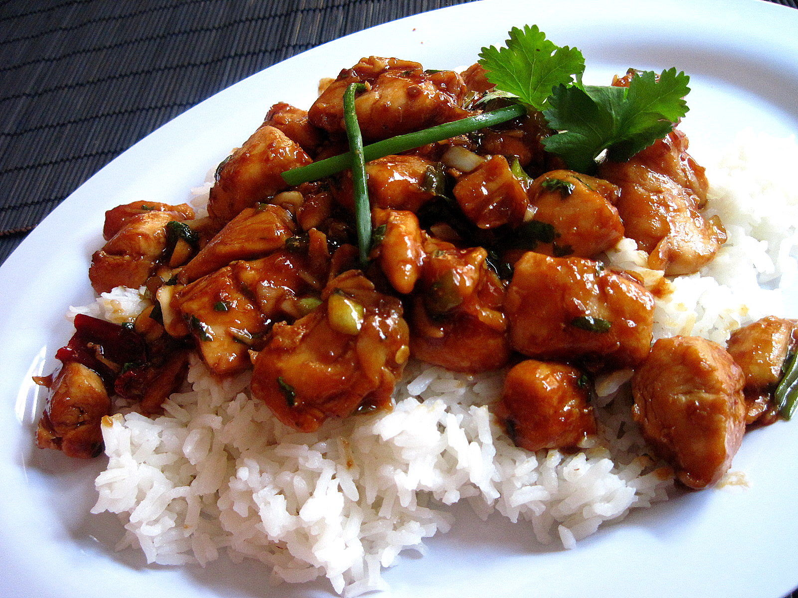

Kung Pao Chicken

Description
Kung pao chicken is a popular chinese dish that consist of stir-fried
chicken, vegetables and peanuts. While it varies between types of Kung pao
chicken, the sauce is typically made with combinations of soy sauce, rice
vinegar, chili peppers, and sugar. The dish is normally eaten with a side
of white rice to compliment the dish.
Ingredients
-
1 pound skinless, boneless chicken breast halves - cut into chunks
- 2 tablespoons white win
- 2 tablespoons soy sauce
- 2 tablespoons sesame oil, divided
- 2 tablespoons cornstarch, dissolved in 2 tablespoons water
- 1 ounce hot chile paste
- 1 teaspoon distilled white vinegar
- 2 teaspoons brown sugar
- 4 green onions, chopped
- 1 tablespoon chopped garlic
- 1 (8 ounce) can water chestnuts
- 4 ounces chopped peanuts
Steps
-
To Make Marinade: Combine 1 tablespoon wine, 1 tablespoon soy sauce, 1
tablespoon oil and 1 tablespoon cornstarch/water mixture and mix
together. Place chicken pieces in a glass dish or bowl and add marinade.
Toss to coat. Cover dish and place in refrigerator for about 30 minutes.
-
To Make Sauce: In a small bowl combine 1 tablespoon wine, 1 tablespoon
soy sauce, 1 tablespoon oil, 1 tablespoon cornstarch/water mixture,
chili paste, vinegar and sugar. Mix together and add green onion,
garlic, water chestnuts and peanuts. In a medium skillet, heat sauce
slowly until aromatic.
-
Meanwhile, remove chicken from marinade and saute in a large skillet
until meat is white and juices run clear. When sauce is aromatic, add
sauteed chicken to it and let simmer together until sauce thickens.
Home